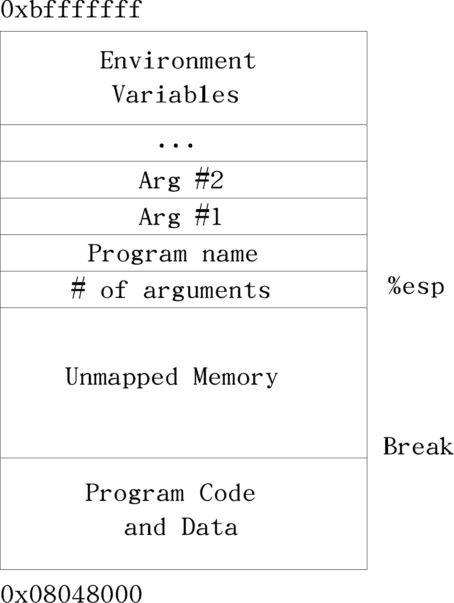

Intermediate Memory Topics¶
How a Computer Views Memory¶
Let’s review how memory within a computer works. You may also want to re-read Computer Architecture.
A computer looks at memory as a long sequence of numbered storage locations. A sequence of millions of numbered storage locations. Everything is stored in these locations. Your programs are stored there, your data is stored there, everything. Each storage location looks like every other one. The locations holding your program are just like the ones holding your data. In fact, the computer has no idea which are which, except that the executable file tells it where to start executing.
These storage locations are called bytes. The computer can combine up to four of them together into a single word. Normally numeric data is operated on a word at a time. As we mentioned, instructions are also stored in this same memory. Each instruction is a different length. Most instructions take up one or two storage locations for the instruction itself, and then storage locations for the instruction’s arguments. For example, the instruction
movl data_items(,%edi,4), %ebx
takes up 7 storage locations. The first two hold the instruction, the
third one tells which registers to use, and the next four hold the
storage location of data_items. In memory, instructions look just
like all the other numbers, and the instructions themselves can be moved
into and out of registers just like numbers, because that’s what they
are.
This chapter is focused on the details of computer memory. To get started let’s review some basic terms that we will be using in this chapter:
- Byte
This is the size of a storage location. On x86 processors, a byte can hold numbers between 0 and 255.
- Word
This is the size of a normal register. On x86 processors, a word is four bytes long. Most computer operations handle a word at a time.
- Address
An address is a number that refers to a byte in memory. For example, the first byte on a computer has an address of 0, the second has an address of 1, and so on. [1] Every piece of data on the computer not in a register has an address. The address of data which spans several bytes is the same as the address of its first byte.
Normally, we don’t ever type the numeric address of anything, but we let the assembler do it for us. When we use labels in code, the symbol used in the label will be equivalent to the address it is labelling. The assembler will then replace that symbol with its address wherever you use it in your program. For example, say you have the following code:
.section .data my_data: .long 2, 3, 4
Now, any time in the program that
my_datais used, it will be replaced by the address of the first value of the.longdirective.- Pointer
A pointer is a register or memory word whose value is an address. In our programs we use
%ebpas a pointer to the current stack frame. All base pointer addressing involves pointers. Programming uses a lot of pointers, so it’s an important concept to grasp.
The Memory Layout of a Linux Program¶
When you program is loaded into memory, each .section is
loaded into its own region of memory. All of the code and data declared
in each section is brought together, even if they were separated in your
source code.
The actual instructions (the .text section) are loaded at the
address 0x08048000 (numbers starting with 0x are in hexadecimal,
which will be discussed in Counting Like a Computer). [2] The
.data section is loaded immediately after that, followed by the
.bss section.
The last byte that can be addressed on Linux is location 0xbfffffff.
Linux starts the stack here and grows it downward toward the other
sections. Between them is a huge gap. The initial layout of the stack is
as follows: At the bottom of the stack (the bottom of the stack is the
top address of memory - see All About Functions), there is a
word of memory that is zero. After that comes the null-terminated name
of the program using ASCII characters. After the program name comes the
program’s environment variables (these are not important to us in this
book). Then come the program’s command-line arguments. These are the
values that the user typed in on the command line to run this program.
When we run as, for example, we give it several arguments - as,
sourcefile.s, -o, and objectfile.o. After these, we have the
number of arguments that were used. When the program begins, this is
where the stack pointer, %esp;, is pointing. Further
pushes on the stack move %esp; down in memory. For example, the
instruction
pushl %eax
is equivalent to
movl %eax, (%esp)
subl $4, %esp
Likewise, the instruction
popl %eax
is the same as
movl (%esp), %eax
addl $4, %esp
Your program’s data region starts at the bottom of memory and goes up. The stack starts at the top of memory, and moves downward with each push. This middle part between the stack and your program’s data sections is inaccessible memory - you are not allowed to access it until you tell the kernel that you need it. [3] If you try, you will get an error (the error message is usually “segmentation fault”). The same will happen if you try to access data before the beginning of your program, 0x08048000. The last accessible memory address to your program is called the system break (also called the current break or just the break).

Every Memory Address is a Lie¶
So, why does the computer not allow you to access memory in the break area? To answer this question, we will have to delve into the depths of how your computer really handles memory.
You may have wondered, since every program gets loaded into the same place in memory, don’t they step on each other, or overwrite each other? It would seem so. However, as a program writer, you only access virtual memory.
Physical memory refers to the actual RAM chips inside your computer and what they contain. It’s usually between 16 and 512 Megabytes on modern computers. If we talk about a physical memory address, we are talking about where exactly on these chips a piece of memory is located. Virtual memory is the way your program thinks about memory. Before loading your program, Linux finds an empty physical memory space large enough to fit your program, and then tells the processor to pretend that this memory is actually at the address 0x0804800 to load your program into. Confused yet? Let me explain further.
Each program gets its own sandbox to play in. Every program running on your computer thinks that it was loaded at memory address 0x0804800, and that its stack starts at 0xbffffff. When Linux loads a program, it finds a section of unused memory, and then tells the processor to use that section of memory as the address 0x0804800 for this program. The address that a program believes it uses is called the virtual address, while the actual address on the chips that it refers to is called the physical address. The process of assigning virtual addresses to physical addresses is called mapping.
Earlier we talked about the inaccessible memory between the .bss and
the stack, but we didn’t talk about why it was there. The reason is that
this region of virtual memory addresses hasn’t been mapped onto physical
memory addresses. The mapping process takes up considerable time and
space, so if every possible virtual address of every possible program
were mapped, you would not have enough physical memory to even run one
program. So, the break is the beginning of the area that contains
unmapped memory. With the stack, however, Linux will automatically map
in memory that is accessed from stack pushes.
Of course, this is a very simplified view of virtual memory. The full concept is much more advanced. For example, Virtual memory can be mapped to more than just physical memory; it can be mapped to disk as well. Swap partitions on Linux allow Linux’s virtual memory system to map memory not only to physical RAM, but also to disk blocks as well. For example, let’s say you only have 16 Megabytes of physical memory. Let’s also say that 8 Megabytes are being used by Linux and some basic applications, and you want to run a program that requires 20 Megabytes of memory. Can you? The answer is yes, but only if you have set up a swap partition. What happens is that after all of your remaining 8 Megabytes of physical memory have been mapped into virtual memory, Linux starts mapping parts of your application’s virtual memory to disk blocks. So, if you access a “memory” location in your program, that location may not actually be in memory at all, but on disk. As the programmer you won’t know the difference, though, because it is all handled behind the scenes by Linux.
Now, x86 processors cannot run instructions directly from disk, nor can they access data directly from disk. This requires the help of the operating system. When you try to access memory that is mapped to disk, the processor notices that it can’t service your memory request directly. It then asks Linux to step in. Linux notices that the memory is actually on disk. Therefore, it moves some data that is currently in memory onto disk to make room, and then moves the memory being accessed from the disk back into physical memory. It then adjusts the processor’s virtual-to-physical memory lookup tables so that it can find the memory in the new location. Finally, Linux returns control to the program and restarts it at the instruction which was trying to access the data in the first place. This instruction can now be completed successfully, because the memory is now in physical RAM. [4]
Here is an overview of the way memory accesses are handled under Linux:
The program tries to load memory from a virtual address.
The processor, using tables supplied by Linux, transforms the virtual memory address into a physical memory address on the fly.
If the processor does not have a physical address listed for the memory address, it sends a request to Linux to load it.
Linux looks at the address. If it is mapped to a disk location, it continues on to the next step. Otherwise, it terminates the program with a segmentation fault error.
If there is not enough room to load the memory from disk, Linux will move another part of the program or another program onto disk to make room.
Linux then moves the data into a free physical memory address.
Linux updates the processor’s virtual-to-physical memory mapping tables to reflect the changes.
Linux restores control to the program, causing it to re-issue the instruction which caused this process to happen.
The processor can now handle the instruction using the newly-loaded memory and translation tables.
It’s a lot of work for the operating system, but it gives the user and the programmer great flexibility when it comes to memory management.
Now, in order to make the process more efficient, memory is separated out into groups called pages. When running Linux on x86 processors, a page is 4096 bytes of memory. All of the memory mappings are done a page at a time. Physical memory assignment, swapping, mapping, etc. are all done to memory pages instead of individual memory addresses. What this means to you as a programmer is that whenever you are programming, you should try to keep most memory accesses within the same basic range of memory, so you will only need a page or two of memory at a time. Otherwise, Linux may have to keep moving pages on and off of disk to satisfy your memory needs. Disk access is slow, so this can really slow down your program.
Sometimes so many programs can be loaded that there is hardly enough physical memory for them. They wind up spending more time just swapping memory on and off of disk than they do actually processing it. This leads to a condition called swap death which leads to your system being unresponsive and unproductive. It’s usually usually recoverable if you start terminating your memory-hungry programs, but it’s a pain.
Note
The amount of memory that your program currently has in physical
memory is called its resident set size, and can be viewed by using
the program top. The resident set size is listed under the column
labelled “RSS”.
Getting More Memory¶
We now know that Linux maps all of our virtual memory into physical
memory or swap. If you try to access a piece of virtual memory that
hasn’t been mapped yet, it triggers an error known as a segmentation
fault, which will terminate your program. The program break point, if
you remember, is the last valid address you can use. Now, this is all
great if you know beforehand how much storage you will need. You can
just add all the memory you need to your .data or .bss sections,
and it will all be there. However, let’s say you don’t know how much
memory you will need. For example, with a text editor, you don’t know
how long the person’s file will be. You could try to find a maximum file
size, and just tell the user that they can’t go beyond that, but that’s
a waste if the file is small. Therefore Linux has a facility to move the
break point to accomodate an application’s memory needs.
If you need more memory, you can just tell Linux where you want the new
break point to be, and Linux will map all the memory you need between
the current and new break point, and then move the break point to the
spot you specify. That memory is now available for your program to use.
The way we tell Linux to move the break point is through the brk
system call. The brk system call is call number 45 (which will be in
%eax;). %ebx; should be loaded with the requested
breakpoint. Then you call int $0x80 to signal Linux to do its work.
After mapping in your memory, Linux will return the new break point in
%eax;. The new break point might actually be larger than what you
asked for, because Linux rounds up to the nearest page. If there is not
enough physical memory or swap to fulfill your request, Linux will
return a zero in %eax;. Also, if you call brk with a zero in
%ebx;, it will simply return the last usable memory address.
The problem with this method is keeping track of the memory we request. Let’s say I need to move the break to have room to load a file, and then need to move a break again to load another file. Let’s say I then get rid of the first file. You now have a giant gap in memory that’s mapped, but that you aren’t using. If you continue to move the break in this way for each file you load, you can easily run out of memory. So, what is needed is a memory manager.
A memory manager is a set of routines that takes care of the dirty work
of getting your program memory for you. Most memory managers have two
basic functions - allocate and deallocate. [5] Whenever you
need a certain amount of memory, you can simply tell allocate how
much you need, and it will give you back an address to the memory. When
you’re done with it, you tell deallocate that you are through with
it. allocate will then be able to reuse the memory. This pattern of
memory management is called dynamic memory allocation. This minimizes
the number of “holes” in your memory, making sure that you are making
the best use of it you can. The pool of memory used by memory managers
is commonly referred to as the heap.
The way memory managers work is that they keep track of where the system
break is, and where the memory that you have allocated is. They mark
each block of memory in the heap as being used or unused. When you
request memory, the memory manager checks to see if there are any unused
blocks of the appropriate size. If not, it calls the brk system call
to request more memory. When you free memory it marks the block as
unused so that future requests can retrieve it. In the next section we
will look at building our own memory manager.
A Simple Memory Manager¶
Here I will show you a simple memory manager. It is very primitive but it shows the principles quite well. As usual, I will give you the program first for you to look through. Afterwards will follow an in-depth explanation. It looks long, but it is mostly comments.
1 #PURPOSE: Program to manage memory usage - allocates
2 # and deallocates memory as requested
3 #
4 #NOTES: The programs using these routines will ask
5 # for a certain size of memory. We actually
6 # use more than that size, but we put it
7 # at the beginning, before the pointer
8 # we hand back. We add a size field and
9 # an AVAILABLE/UNAVAILABLE marker. So, the
10 # memory looks like this
11 #
12 # #########################################################
13 # #Available Marker#Size of memory#Actual memory locations#
14 # #########################################################
15 # ^--Returned pointer
16 # points here
17 # The pointer we return only points to the actual
18 # locations requested to make it easier for the
19 # calling program. It also allows us to change our
20 # structure without the calling program having to
21 # change at all.
22
23 .section .data
24
25#######GLOBAL VARIABLES########
26
27#This points to the beginning of the memory we are managing
28heap_begin:
29 .long 0
30
31#This points to one location past the memory we are managing
32current_break:
33 .long 0
34
35
36
37######STRUCTURE INFORMATION####
38 #size of space for memory region header
39 .equ HEADER_SIZE, 8
40 #Location of the "available" flag in the header
41 .equ HDR_AVAIL_OFFSET, 0
42 #Location of the size field in the header
43 .equ HDR_SIZE_OFFSET, 4
44
45
46###########CONSTANTS###########
47 .equ UNAVAILABLE, 0 #This is the number we will use to mark
48 #space that has been given out
49 .equ AVAILABLE, 1 #This is the number we will use to mark
50 #space that has been returned, and is
51 #available for giving
52 .equ SYS_BRK, 45 #system call number for the break
53 #system call
54
55 .equ LINUX_SYSCALL, 0x80 #make system calls easier to read
56
57
58 .section .text
59
60
61
62##########FUNCTIONS############
63
64 ##allocate_init##
65 #PURPOSE: call this function to initialize the
66 # functions (specifically, this sets heap_begin and
67 # current_break). This has no parameters and no
68 # return value.
69 .globl allocate_init
70 .type allocate_init,@function
71allocate_init:
72 pushl %ebp #standard function stuff
73 movl %esp, %ebp
74
75 #If the brk system call is called with 0 in %ebx, it
76 #returns the last valid usable address
77 movl $SYS_BRK, %eax #find out where the break is
78 movl $0, %ebx
79 int $LINUX_SYSCALL
80
81 incl %eax #%eax now has the last valid
82 #address, and we want the
83 #memory location after that
84
85 movl %eax, current_break #store the current break
86
87 movl %eax, heap_begin #store the current break as our
88 #first address. This will cause
89 #the allocate function to get
90 #more memory from Linux the
91 #first time it is run
92
93 movl %ebp, %esp #exit the function
94 popl %ebp
95 ret
96#####END OF FUNCTION#######
97
98
99 ##allocate##
100 #PURPOSE: This function is used to grab a section of
101 # memory. It checks to see if there are any
102 # free blocks, and, if not, it asks Linux
103 # for a new one.
104 #
105 #PARAMETERS: This function has one parameter - the size
106 # of the memory block we want to allocate
107 #
108 #RETURN VALUE:
109 # This function returns the address of the
110 # allocated memory in %eax. If there is no
111 # memory available, it will return 0 in %eax
112 #
113 ######PROCESSING########
114 #Variables used:
115 #
116 # %ecx - hold the size of the requested memory
117 # (first/only parameter)
118 # %eax - current memory region being examined
119 # %ebx - current break position
120 # %edx - size of current memory region
121 #
122 #We scan through each memory region starting with
123 #heap_begin. We look at the size of each one, and if
124 #it has been allocated. If it's big enough for the
125 #requested size, and its available, it grabs that one.
126 #If it does not find a region large enough, it asks
127 #Linux for more memory. In that case, it moves
128 #current_break up
129
130 .globl allocate
131 .type allocate,@function
132 .equ ST_MEM_SIZE, 8 #stack position of the memory size
133 #to allocate
134allocate:
135 pushl %ebp #standard function stuff
136 movl %esp, %ebp
137
138 movl ST_MEM_SIZE(%ebp), %ecx #%ecx will hold the size
139 #we are looking for (which is the first
140 #and only parameter)
141
142 movl heap_begin, %eax #%eax will hold the current
143 #search location
144
145 movl current_break, %ebx #%ebx will hold the current
146 #break
147
148
149alloc_loop_begin: #here we iterate through each
150 #memory region
151
152 cmpl %ebx, %eax #need more memory if these are equal
153 je move_break
154
155 #grab the size of this memory
156 movl HDR_SIZE_OFFSET(%eax), %edx
157 #If the space is unavailable, go to the
158 cmpl $UNAVAILABLE, HDR_AVAIL_OFFSET(%eax)
159 je next_location #next one
160
161 cmpl %edx, %ecx #If the space is available, compare
162 jle allocate_here #the size to the needed size. If its
163 #big enough, go to allocate_here
164
165next_location:
166 addl $HEADER_SIZE, %eax #The total size of the memory
167 addl %edx, %eax #region is the sum of the size
168 #requested (currently stored
169 #in %edx), plus another 8 bytes
170 #for the header (4 for the
171 #AVAILABLE/UNAVAILABLE flag,
172 #and 4 for the size of the
173 #region). So, adding %edx and $8
174 #to %eax will get the address
175 #of the next memory region
176
177 jmp alloc_loop_begin #go look at the next location
178
179allocate_here: #if we've made it here,
180 #that means that the
181 #region header of the region
182 #to allocate is in %eax
183
184 #mark space as unavailable
185 movl $UNAVAILABLE, HDR_AVAIL_OFFSET(%eax)
186 addl $HEADER_SIZE, %eax #move %eax past the header to
187 #the usable memory (since
188 #that's what we return)
189
190 movl %ebp, %esp #return from the function
191 popl %ebp
192 ret
193
194
195move_break: #if we've made it here, that
196 #means that we have exhausted
197 #all addressable memory, and
198 #we need to ask for more.
199 #%ebx holds the current
200 #endpoint of the data,
201 #and %ecx holds its size
202
203 #we need to increase %ebx to
204 #where we _want_ memory
205 #to end, so we
206 addl $HEADER_SIZE, %ebx #add space for the headers
207 #structure
208 addl %ecx, %ebx #add space to the break for
209 #the data requested
210
211 #now its time to ask Linux
212 #for more memory
213
214 pushl %eax #save needed registers
215 pushl %ecx
216 pushl %ebx
217
218 movl $SYS_BRK, %eax #reset the break (%ebx has
219 #the requested break point)
220 int $LINUX_SYSCALL
221 #under normal conditions, this should
222 #return the new break in %eax, which
223 #will be either 0 if it fails, or
224 #it will be equal to or larger than
225 #we asked for. We don't care
226 #in this program where it actually
227 #sets the break, so as long as %eax
228 #isn't 0, we don't care what it is
229
230 cmpl $0, %eax #check for error conditions
231 je error
232
233 popl %ebx #restore saved registers
234 popl %ecx
235 popl %eax
236
237 #set this memory as unavailable, since we're about to
238 #give it away
239 movl $UNAVAILABLE, HDR_AVAIL_OFFSET(%eax)
240 #set the size of the memory
241 movl %ecx, HDR_SIZE_OFFSET(%eax)
242
243 #move %eax to the actual start of usable memory.
244 #%eax now holds the return value
245 addl $HEADER_SIZE, %eax
246
247 movl %ebx, current_break #save the new break
248
249 movl %ebp, %esp #return the function
250 popl %ebp
251 ret
252
253error:
254 movl $0, %eax #on error, we return zero
255 movl %ebp, %esp
256 popl %ebp
257 ret
258########END OF FUNCTION########
259
260
261 ##deallocate##
262 #PURPOSE:
263 # The purpose of this function is to give back
264 # a region of memory to the pool after we're done
265 # using it.
266 #
267 #PARAMETERS:
268 # The only parameter is the address of the memory
269 # we want to return to the memory pool.
270 #
271 #RETURN VALUE:
272 # There is no return value
273 #
274 #PROCESSING:
275 # If you remember, we actually hand the program the
276 # start of the memory that they can use, which is
277 # 8 storage locations after the actual start of the
278 # memory region. All we have to do is go back
279 # 8 locations and mark that memory as available,
280 # so that the allocate function knows it can use it.
281 .globl deallocate
282 .type deallocate,@function
283 #stack position of the memory region to free
284 .equ ST_MEMORY_SEG, 4
285deallocate:
286 #since the function is so simple, we
287 #don't need any of the fancy function stuff
288
289 #get the address of the memory to free
290 #(normally this is 8(%ebp), but since
291 #we didn't push %ebp or move %esp to
292 #%ebp, we can just do 4(%esp)
293 movl ST_MEMORY_SEG(%esp), %eax
294
295
296 #get the pointer to the real beginning of the memory
297 subl $HEADER_SIZE, %eax
298
299 #mark it as available
300 movl $AVAILABLE, HDR_AVAIL_OFFSET(%eax)
301
302 #return
303 ret
304########END OF FUNCTION##########
The first thing to notice is that there is no _start symbol. The
reason is that this is just a set of functions. A memory manager by
itself is not a full program - it doesn’t do anything. It is simply a
utility to be used by other programs.
To assemble the program, do the following:
as alloc.s -o alloc.o
Okay, now let’s look at the code.
Variables and Constants¶
At the beginning of the program, we have two locations set up:
heap_begin:
.long 0
current_break:
.long 0
Remember, the section of memory being managed is commonly referred to as the heap. When we assemble the program, we have no idea where the beginning of the heap is, nor where the current break is. Therefore, we reserve space for their addresses, but just fill them with a 0 for the time being.
Next we have a set of constants to define the structure of the heap. The way this memory manager works is that before each region of memory allocated, we will have a short record describing the memory. This record has a word reserved for the available flag and a word for the region’s size. The actual memory allocated immediately follows this record. The available flag is used to mark whether this region is available for allocations, or if it is currently in use. The size field lets us know both whether or not this region is big enough for an allocation request, as well as the location of the next memory region. The following constants describe this record:
.equ HEADER_SIZE, 8
.equ HDR_AVAIL_OFFSET, 0
.equ HDR_SIZE_OFFSET, 4
This says that the header is 8 bytes total, the available flag is offset 0 bytes from the beginning, and the size field is offset 4 bytes from the beginning. If we are careful to always use these constants, then we protect ourselves from having to do too much work if we later decide to add more information to the header.
The values that we will use for our available field are either 0 for
unavailable, or 1 for available. To make this easier to read, we have
the following definitions:
.equ UNAVAILABLE, 0
.equ AVAILABLE, 1
Finally, we have our Linux system call definitions:
.equ BRK, 45
.equ LINUX_SYSCALL, 0x80
The allocate_init function¶
Okay, this is a simple function. All it does is set up the
heap_begin and current_break variables we discussed earlier. So,
if you remember the discussion earlier, the current break can be found
using the brk system call. So, the function starts like this:
pushl %ebp
movl %esp, %ebp
movl $SYS_BRK, %eax
movl $0, %ebx
int $LINUX_SYSCALL
Anyway, after int $LINUX_SYSCALL, %eax holds the last valid
address. We actually want the first invalid address instead of the last
valid address, so we just increment %eax. Then we move that value to
the heap_begin and current_break locations. Then we leave the
function. The code looks like this:
incl %eax
movl %eax, current_break
movl %eax, heap_begin
movl %ebp, %esp
popl %ebp
ret
The heap consists of the memory between heap_begin and
current_break, so this says that we start off with a heap of zero
bytes. Our allocate function will then extend the heap as much as it
needs to when it is called.
The allocate function¶
This is the doozy function. Let’s start by looking at an outline of the function:
Start at the beginning of the heap.
Check to see if we’re at the end of the heap.
If we are at the end of the heap, grab the memory we need from Linux, mark it as “unavailable” and return it. If Linux won’t give us any more, return a 0.
If the current memory region is marked “unavailable”, go to the next one, and go back to step 2.
If the current memory region is too small to hold the requested amount of space, go back to step 2.
If the memory region is available and large enough, mark it as “unavailable” and return it.
Now, look back through the code with this in mind. Be sure to read the comments so you’ll know which register holds which value.
Now that you’ve looked back through the code, let’s examine it one line at a time. We start off like this:
pushl %ebp
movl %esp, %ebp
movl ST_MEM_SIZE(%ebp), %ecx
movl heap_begin, %eax
movl current_break, %ebx
This part initializes all of our registers. The first two lines are standard function stuff. The next move pulls the size of the memory to allocate off of the stack. This is our only function parameter. After that, it moves the beginning heap address and the end of the heap into registers. I am now ready to do processing.
The next section is marked alloc_loop_begin. In this loop we are
going to examine memory regions until we either find an open memory
region or determine that we need more memory. Our first instructions
check to see if we need more memory:
cmpl %ebx, %eax
je move_break
%eax; holds the current memory region being examined and
%ebx; holds the location past the end of the heap. Therefore if
the next region to be examined is past the end of the heap, it means we
need more memory to allocate a region of this size. Let’s skip down to
move_break and see what happens there:
move_break:
addl $HEADER_SIZE, %ebx
addl %ecx, %ebx
pushl %eax
pushl %ecx
pushl %ebx
movl $SYS_BRK, %eax
int $LINUX_SYSCALL
When we reach this point in the code, %ebx; holds where we want
the next region of memory to be. So, we add our header size and region
size to %ebx;, and that’s where we want the system break to be.
We then push all the registers we want to save on the stack, and call
the brk system call. After that we check for errors:
cmpl $0, %eax
je error
If there were no errors we pop the registers back off the stack, mark the memory as unavailable, record the size of the memory, and make sure %eax; points to the start of usable memory (which is after the header).
popl %ebx
popl %ecx
popl %eax
movl $UNAVAILABLE, HDR_AVAIL_OFFSET(%eax)
movl %ecx, HDR_SIZE_OFFSET(%eax)
addl $HEADER_SIZE, %eax
Then we store the new program break and return the pointer to the allocated memory.
movl %ebx, current_break
movl %ebp, %esp
popl %ebp
ret
The error code just returns 0 in %eax;, so we won’t discuss
it.
Let’s go back look at the rest of the loop. What happens if the current memory being looked at isn’t past the end of the heap? Well, let’s look.
movl HDR_SIZE_OFFSET(%eax), %edx
cmpl $UNAVAILABLE, HDR_AVAIL_OFFSET(%eax)
je next_location
This first grabs the size of the memory region and puts it in
%edx;. Then it looks at the available flag to see if it is set to
UNAVAILABLE. If so, that means that memory region is in use, so
we’ll have to skip over it. So, if the available flag is set to
UNAVAILABLE, you go to the code labeled next_location. If the
available flag is set to AVAILABLE, then we keep on going.
Let’s say that the space was available, and so we keep going. Then we check to see if this space is big enough to hold the requested amount of memory. The size of this region is being held in %edx;, so we do this:
cmpl %edx, %ecx
jle allocate_here
If the requested size is less than or equal to the current region’s
size, we can use this block. It doesn’t matter if the current region is
larger than requested, because the extra space will just be unused. So,
let’s jump down to allocate_here and see what happens:
movl $UNAVAILABLE, HDR_AVAIL_OFFSET(%eax)
addl $HEADER_SIZE, %eax
movl %ebp, %esp
popl %ebp
ret
It marks the memory as being unavailable. Then it moves the pointer %eax; past the header, and uses it as the return value for the function. Remember, the person using this function doesn’t need to even know about our memory header record. They just need a pointer to usable memory.
Okay, so let’s say the region wasn’t big enough. What then? Well, we
would then be at the code labeled next_location. This section of
code is used any time that we figure out that the current memory region
won’t work for allocating memory. All it does is advance %eax; to
the next possible memory region, and goes back to the beginning of the
loop. Remember that %edx; is holding the size of the current
memory region, and HEADER_SIZE is the symbol for the size of the
memory region’s header. So this code will move us to the next memory
region:
addl $HEADER_SIZE, %eax
addl %edx, %eax
jmp alloc_loop_begin
And now the function runs another loop.
Whenever you have a loop, you must make sure that it will always end. The best way to do that is to examine all of the possibilities, and make sure that all of them eventually lead to the loop ending. In our case, we have the following possibilities:
We will reach the end of the heap
We will find a memory region that’s available and large enough
We will go to the next location
The first two items are conditions that will cause the loop to end. The third one will keep it going. However, even if we never find an open region, we will eventually reach the end of the heap, because it is a finite size. Therefore, we know that no matter which condition is true, the loop has to eventually hit a terminating condition.
The deallocate function¶
The deallocate function is much easier than the allocate one.
That’s because it doesn’t have to do any searching at all. It can just
mark the current memory region as AVAILABLE, and allocate will
find it next time it is called. So we have:
movl ST_MEMORY_SEG(%esp), %eax
subl $HEADER_SIZE, %eax
movl $AVAILABLE, HDR_AVAIL_OFFSET(%eax)
ret
In this function, we don’t have to save %ebp; or %esp; since we’re not changing them, nor do we have to restore them at the end. All we’re doing is reading the address of the memory region from the stack, backing up to the beginning of the header, and marking the region as available. This function has no return value, so we don’t care what we leave in %eax;.
Performance Issues and Other Problems¶
Our simplistic memory manager is not really useful for anything more than an academic exercise. This section looks at the problems with such a simplistic allocator.
The biggest problem here is speed. Now, if there are only a few
allocations made, then speed won’t be a big issue. But think about what
happens if you make a thousand allocations. On allocation number 1000,
you have to search through 999 memory regions to find that you have to
request more memory. As you can see, that’s getting pretty slow. In
addition, remember that Linux can keep pages of memory on disk instead
of in memory. So, since you have to go through every piece of memory
your program’s memory, that means that Linux has to load every part of
memory that’s currently on disk to check to see if it is available. You
can see how this could get really, really slow. [6] This method is said
to run in linear time, which means that every element you have to
manage makes your program take longer. A program that runs in constant
time takes the same amount of time no matter how many elements you are
managing. Take the deallocate function, for instance. It only runs 4
instructions, no matter how many elements we are managing, or where they
are in memory. In fact, although our allocate function is one of the
slowest of all memory managers, the deallocate function is one of
the fastest.
Another performance problem is the number of times we’re calling the
brk system call. System calls take a long time. They aren’t like
functions, because the processor has to switch modes. Your program isn’t
allowed to map itself memory, but the Linux kernel is. So, the processor
has to switch into kernel mode, then Linux maps the memory, and then
switches back to user mode for your application to continue running.
This is also called a context switch. Context switches are relatively
slow on x86 processors. Generally, you should avoid calling the kernel
unless you really need to.
Another problem that we have is that we aren’t recording where Linux
actually sets the break. Previously we mentioned that Linux might
actually set the break past where we requested it. In this program, we
don’t even look at where Linux actually sets the break - we just assume
it sets it where we requested. That’s not really a bug, but it will lead
to unnecessary brk system calls when we already have the memory
mapped in.
Another problem we have is that if we are looking for a 5-byte region of memory, and the first open one we come to is 1000 bytes, we will simply mark the whole thing as allocated and return it. This leaves 995 bytes of unused, but allocated, memory. It would be nice in such situations to break it apart so the other 995 bytes can be used later. It would also be nice to combine consecutive free spaces when looking for large allocations.
Using our Allocator¶
The programs we do in this book aren’t complicated enough to necessitate
a memory manager. Therefore, we will just use our memory manager to
allocate a buffer for one of our file reading/writing programs instead
of assigning it in the .bss.
The program we will demonstrate this on is read-records.s from
Reading and Writing Simple Records. This program uses a buffer named record_buffer
to handle its input/output needs. We will simply change this from being
a buffer defined in .bss to being a pointer to a
dynamically-allocated buffer using our memory manager. You will need to
have the code from that program handy as we will only be discussing the
changes in this section.
The first change we need to make is in the declaration. Currently it looks like this:
.section .bss
.lcomm, record_buffer, RECORD_SIZE
It would be a misnomer to keep the same name, since we are switching it
from being an actual buffer to being a pointer to a buffer. In addition,
it now only needs to be one word big (enough to hold a pointer). The new
declaration will stay in the .data section and look like this:
record_buffer_ptr:
.long 0
Our next change is we need to initialize our memory manager immediately after we start our program. Therefore, right after the stack is set up, the following call needs to be added:
call allocate_init
After that, the memory manager is ready to start servicing memory
allocation requests. We need to allocate enough memory to hold these
records that we are reading. Therefore, we will call allocate to
allocate this memory, and then save the pointer it returns into
record_buffer_ptr. Like this:
pushl $RECORD_SIZE
call allocate
movl %eax, record_buffer_ptr
Now, when we make the call to read_record, it is expecting a
pointer. In the old code, the pointer was the immediate-mode reference
to record_buffer. Now, record_buffer_ptr just holds the pointer
rather than the buffer itself. Therefore, we must do a direct mode load
to get the value in record_buffer_ptr. We need to remove this line:
pushl $record_buffer
And put this line in its place:
pushl record_buffer_ptr
The next change comes when we are trying to find the address of the
firstname field of our record. In the old code, it was
$RECORD_FIRSTNAME + record_buffer. However, that only works because
it is a constant offset from a constant address. In the new code, it is
the offset of an address stored in record_buffer_ptr. To get that
value, we will need to move the pointer into a register, and then add
$RECORD_FIRSTNAME to it to get the pointer. So where we have the
following code:
pushl $RECORD_FIRSTNAME + record_buffer
We need to replace it with this:
movl record_buffer_ptr, %eax
addl $RECORD_FIRSTNAME, %eax
pushl %eax
Similarly, we need to change the line that says
movl $RECORD_FIRSTNAME + record_buffer, %ecx
so that it reads like this:
movl record_buffer_ptr, %ecx
addl $RECORD_FIRSTNAME, %ecx
Finally, one change that we need to make is to deallocate the memory
once we are done with it (in this program it’s not necessary, but it’s a
good practice anyway). To do that, we just send record_buffer_ptr to
the deallocate function right before exitting:
pushl record_buffer_ptr
call deallocate
Now you can build your program with the following commands:
as read-records.s -o read-records.o
ld alloc.o read-record.o read-records.o write-newline.o count-chars.o -o read-records
You can then run your program by doing ./read-records.
The uses of dynamic memory allocation may not be apparent to you at this point, but as you go from academic exercises to real-life programs you will use it continually.
More Information¶
More information on memory handling in Linux and other operating systems can be found at the following locations:
More information about the memory layout of Linux programs can be found in Konstantin Boldyshev’s document, “Startup state of a Linux/i386 ELF binary”, available at http://linuxassembly.org/startup.html
A good overview of virtual memory in many different systems is available at http://cne.gmu.edu/modules/vm/
Several in-depth articles on Linux’s virtual memory subsystem is available at http://www.nongnu.org/lkdp/files.html
Doug Lea has written up a description of his popular memory allocator at http://gee.cs.oswego.edu/dl/html/malloc.html
A paper on the 4.4 BSD memory allocator is available at http://docs.freebsd.org/44doc/papers/malloc.html
Review¶
Know the Concepts¶
Describe the layout of memory when a Linux program starts.
What is the heap?
What is the current break?
Which direction does the stack grow in?
Which direction does the heap grow in?
What happens when you access unmapped memory?
How does the operating system prevent processes from writing over each other’s memory?
Describe the process that occurs if a piece of memory you are using is currently residing on disk?
Why do you need an allocator?
Use the Concepts¶
Modify the memory manager so that it calls
allocate_initautomatically if it hasn’t been initialized.Modify the memory manager so that if the requested size of memory is smaller than the region chosen, it will break up the region into multiple parts. Be sure to take into account the size of the new header record when you do this.
Modify one of your programs that uses buffers to use the memory manager to get buffer memory rather than using the
.bss.
Going Further¶
Research garbage collection. What advantages and disadvantages does this have over the style of memory management used here?
Research reference counting. What advantages and disadvantages does this have over the style of memory management used here?
Change the name of the functions to
mallocandfree, and build them into a shared library. UseLD_PRELOADto force them to be used as your memory manager instead of the default one. Add somewritesystem calls to STDOUT to verify that your memory manager is being used instead of the default one.